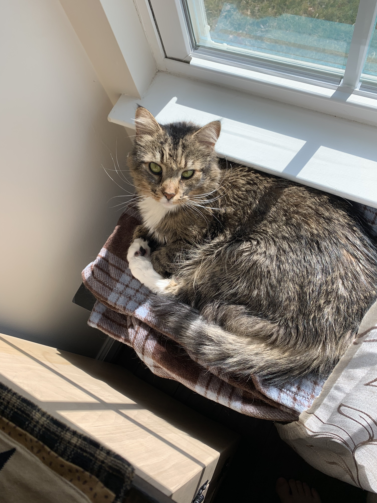
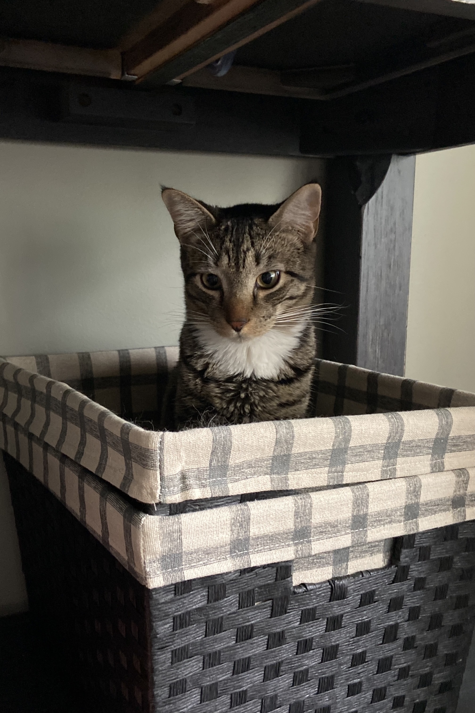
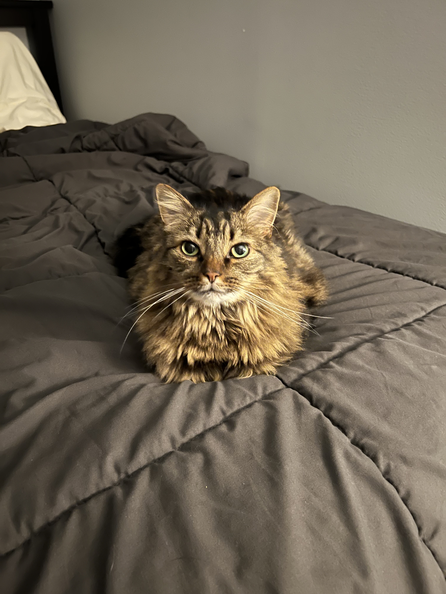

Meet My Pets
Here are my five best companions 🐾
Pet Gallery

Eleven — Maine Coon, timid and reserved but likes attention

Charlie — Short hair, playful, enjoys to be in the bathroom

Ben — Maine Coon mix, restful, treats are a necessity

Daisy — Calico, mischievous, likes to lay on the garage floor

Archie — Golden doodle, curious, loves to go on walks